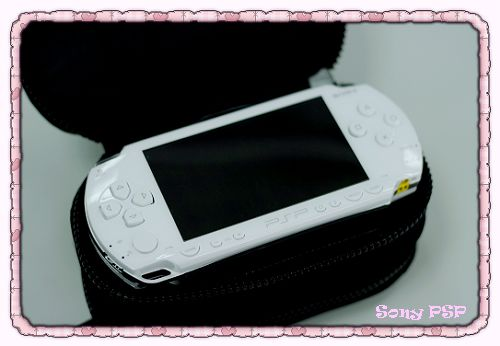

我的新伙伴@sony psp @ Jan 17, 2007
近日购进白色sony psp，2G卡。
新出色款有银灰和宝蓝色。背面皆为光面，还是喜欢亚光磨砂处理，所以挑了白色。计划中的粉红色，实物效果实在不敢苟同。另外配了款双层便携牛津包，除了装入PSP之外，其它配件均可装入，方便出差旅行时携带。PSP可以读书、玩游戏、看电影、养宠物、听音乐、下载照片，2007年从电子生活开始！



近日购进白色sony psp，2G卡。
新出色款有银灰和宝蓝色。背面皆为光面，还是喜欢亚光磨砂处理，所以挑了白色。计划中的粉红色，实物效果实在不敢苟同。另外配了款双层便携牛津包，除了装入PSP之外，其它配件均可装入，方便出差旅行时携带。PSP可以读书、玩游戏、看电影、养宠物、听音乐、下载照片，2007年从电子生活开始！

« 你pay我pay | 《Clerks I》1994 »
21 Responses to “我的新伙伴@sony psp”
2007-01-17
PS3才是王道
2007-01-17
PS3日本销售的并不好，况且刚上市，国内盗版游戏玩不起来，即使国内有卖还存在破解系统问题，再者PS3在电视上玩，难道外出再背台电视机？与PS3抗衡的xBOX360，据说有的游戏画面比PS3还要细腻。
便携式的PSP，各方面功能比较强。任天堂双屏NDS也是便携式的，不过里面的游戏比较弱，功能上也逊色许多。
Michael的“王道”要看针对哪方面来讲了！
2007-01-17
同意，还是PSP比较实用，走到哪玩到哪^_^
不过你最近拍的照片张张都用小景深，其实这几张PSP的更适合用微距来拍
是懒得换头的缘故么？
2007-01-17
是滴，懒得换镜头，也说到偶的痛处啦，么得买微距镜头：P
现在只有一个远焦和人像定焦的镜头。手机和PSP的照片拍的比较差，偶心痛啊。办公室的光线也不好。
2007-01-17
茶同学，现在都玩任天堂的Wii了，不过要小心，发生很多起手柄丢到电视机上或者砸坏家具的事件，任天堂已经开始召回想象中已经能和手绑很紧的手柄。
2007-01-17
DSLR之后就是败家的开始....... 不败吧，对不起身子，哈
2007-01-17
PSP，PS3都是小孩玩的，我儿子刚买了PS3，CHRISTINA 看来这是一个假小子，赶紧生个男孩和你一起玩。


我儿子的GAMES
PS3
2007-01-18
请问要多少银两阿
2007-01-18
你们都是幸福人儿哟.PSP看电影不错
2007-01-18
You guys must have too much time on hand!!
Having/Playing more games do not improves a person’s happiness. As for children, play too much game in the virtual world might affect his/her ability in dealing with real life issues in the real world later in their life.
2007-01-18
任天堂的Wii国内也有啦~
“Having/Playing more games do not improves a person’s happiness.”娱乐自己,娱乐生活!
2007-01-18
As for children, play too much game in the virtual world might affect his/her ability in dealing with real life issues in the real world later in their life. 此句有明显语法错误。
1st——to play/playing
2nd——句子虽然强调REAL，但如果你仔细看一下就会感到比较绕,不要重复用词。这也是语法错误。
：） I am joking.
2007-01-18
这是“on hand”的正确用法
on ‘hand:
available, especially to help:
The emergency services were on hand with medical advice.
2007-01-18
Playing video game. watching TV and Playing ball are important part of the real world. The boys who don’t know the lastest games could hardly make friends in school. Other will think he is silly and idiot if he doesn’t know any about video games. My kid is a nomal boy and not a genius. He can do anything that other kids do and enjoy life. There are a variety of universities in the states. He doesn’t have to get in Harvard, MIT or Princeton if he is not wlling to go here.
2007-01-18
Wii好玩啊，据说是游戏和运动相结合，所以才会把手柄甩到电视上去！打高尔夫是要真的双手握柄挥杆出去，再一看，手柄飞到电视机那边去了
2007-01-19
Youzi, How do you entertain yourself is none of my business. All I’m saying is “TOO MUCH” video game is not good for you. We have games at our home as well, but it never came high on the list of our entertainment choices. When we have spare time, more often than not; we selected other options.
I like to post some pictures after my comments. How do I do that?
2007-01-19
Michael; “The emergency services were on hand with medical advice.”
Do you mean “medical advice” = words
Or Do you mean “medical device” = equipment
2007-01-20
怎么又开始英文了，中文输入法是可以添加的
video games没什么多不多的问题，全看玩着自己的感受了，playing too much也不见得不好，很多公司像EA都喜欢招收enthusiastic player…
2007-01-20
1st pic posting.
http://www.imagestation.com/8494002/3942977683
2007-01-20
2007-01-22
To:ILN
The emergency services were on hand with medical advice
the emergency services were “available-to use/help” with medical advice.
Lot’s of people speak English, but not too many of them can use the perfect grammar(even the native speakers). When you got used to the wrong phrases or expressions, you could spend tons of time and effert on correcting them. You may say you speak English 24 hours a day, or use it for work…, but we should improve it right? I believe you can NOT hold the mistakes for 24 hours a day or for the rest of your life.
What do you say ILN?
Leave A Reply
存档只读，评论已关闭。